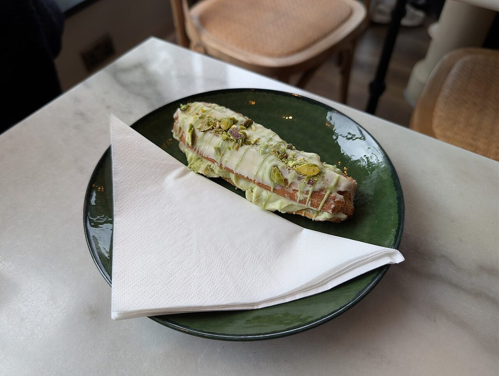
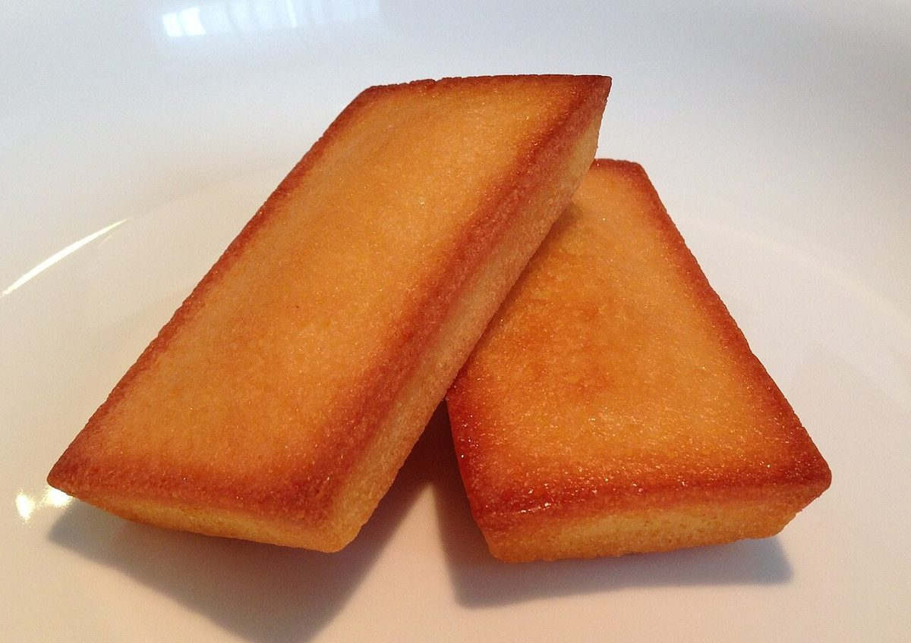

制作側の連想
ドイリーの透かし模様から
お店の理念や由来とは無関係な、制作側の連想です。「パティスリー」と聞いて思い浮かべたのが、お皿の下に敷く紙のレース(ドイリー)でした。円形の紙に小さな穴が規則正しく並ぶ、あの透かし模様です。そこでこのサイトは、丸く切り抜いた写真を透かし穴に見立てて並べ、縁をぎざぎざの波形(スカラップ)で区切る作りにしています。
七つの透かし穴(イメージ)
焼き菓子と器のイメージ。
写真はお店や与那原町のものではありません。雰囲気を伝えるための、国外・撮影地不明のフリー素材です。お店で提供しているものを示すものでもありません。






ご案内
確認できていること
| 所在地 | 〒901-1303 沖縄県島尻郡与那原町与那原380-8 |
|---|---|
| 電話 | 090-9788-2069 |
| 営業時間 | 準備中 |
| 定休日 | 準備中 |
| ご予約 | 準備中 |
| 駐車場 | 準備中 |
| SNS | Instagram @lelien.cake |